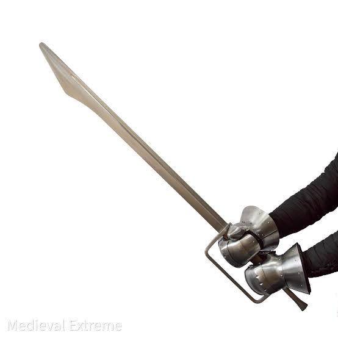
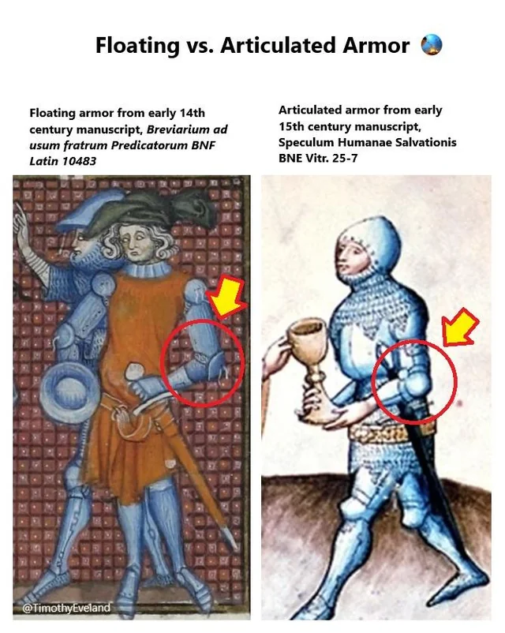

Weapons & Armor Mechanics
Your choice of equipment defines your job inside the lyst. Different weapons have different advantages, and your armor can make a big difference when taking hits.

Tournament weapons are blunted and have rounded corners to make them safer while still allowing fighters to feel the hit. Your weapon choice also depends a lot on your role on the team. Be a team player! Unless you're fighting in pro fights, you'll need to work with your team.
Fighters also have to think about weight and endurance. Swinging a weapon over and over while wearing heavy armor gets tiring really fast. Helmets also don't exactly give you the best airflow.
Why they are a good choice: They are a good overall weapon because they are balanced and versatile. One-handed falchions have enough weight toward the front to hit hard, but they are still easy enough to use for blocking, shields, and grappling.
Why it is a good choice: Maces are made for hitting hard. A lot of their weight is toward the end of the weapon, which creates a lot of impact when it connects. They are especially useful against heavier armor. It hurts!
Why it is a good choice: Short axes are good for hooking and controlling people. The axe head puts the force into a smaller area, and the curved part can be used to catch shields or arms.
Why it is a good choice: The biggest advantage is range. Longaxes give the fighter more leverage and can generate a lot of momentum. They are usually better for support fighters who stay farther back from the main fight.
Floating armor uses separate metal plates that are attached to a padded layer underneath. The plates can move a little on their own, which helps spread out some of the force from a hit.
Pros:
Good impact absorption and usually easier to repair.
Individual plates can be replaced without replacing
the whole setup.
Cons:
Small gaps can appear when you move, and it can feel
bulkier than armor that is fitted directly to your body.
Articulated armor uses several plates that overlap and move together around the joints. The armor is fitted closely to the fighter, which gives good coverage while still allowing movement.
Pros:
Very good coverage and fewer gaps. It can also make
running and grappling easier when it fits correctly.
Cons:
It costs more and takes more work to make. If a rivet
or joint gets damaged, that part of the armor might
not move correctly anymore. It also needs to be fitted
pretty precisely.

A lot of modern Buhurt fighters use a mix of both types. Articulated armor works well around places like elbows and knees because those areas need to move a lot. Floating plates can be used on the torso to help absorb impacts.
Good place to find weapons, padded gear, safety equipment, and armor. They also restock pretty often.
Visit StoreKnown for high end titanium parts, custom kits, and helmets. Their stuff is expensive, but the quality is good.
Visit StoreMakes custom armor pieces from Ukraine. Their armor is made to the fighter's measurements. The wait can be long, but they are known for strong and mobile armor.
Visit Store